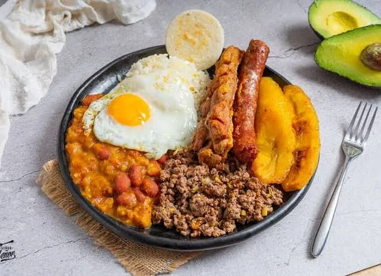
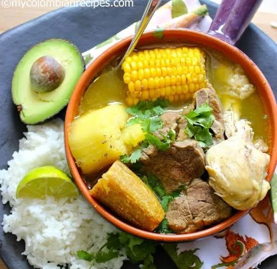

Bandeja Paisa
El plato más generoso de Antioquia: frijoles, arroz, carne molida, chicharrón, huevo y aguacate.
Ver receta completa →Recetas tradicionales con el toque secreto de la Cuchita.

El plato más generoso de Antioquia: frijoles, arroz, carne molida, chicharrón, huevo y aguacate.
Ver receta completa →
Sopa tradicional bogotana con tres tipos de papa, pollo, guascas, alcaparras y crema de leche.
Ver receta completa →
Un festín que combina pollo, res y cerdo con plátano, yuca y papa en un caldo lleno de sabor.
Ver receta completa →
Arroz con carne de cerdo y arvejas, cocinado lentamente hasta lograr una piel crocante deliciosa.
Ver receta completa →